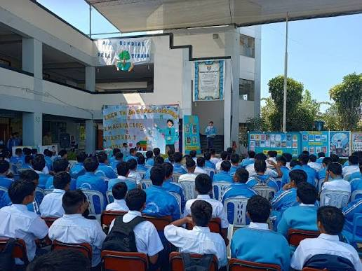
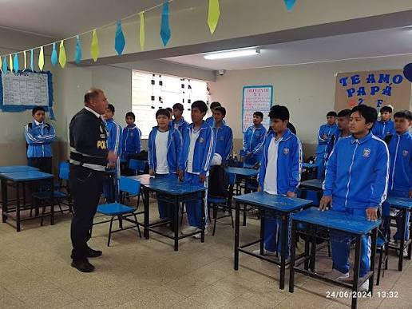
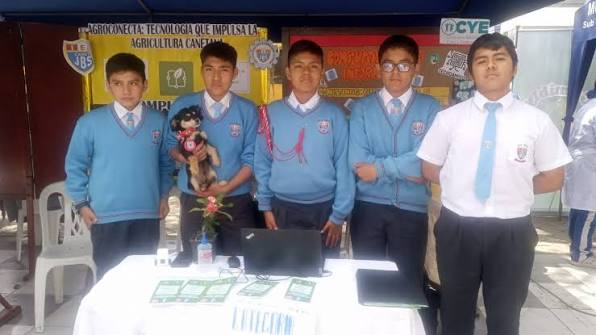
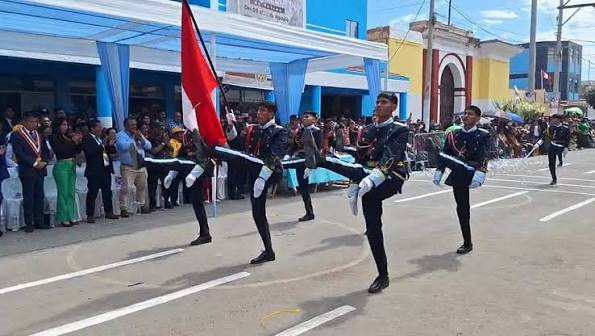
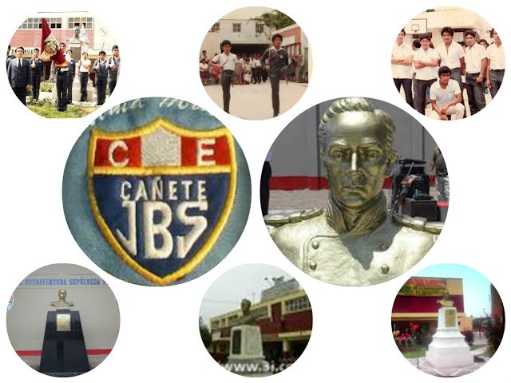

📷 Nuestra memoria en imágenes
Esta galería reúne fotografías que forman parte de la historia, identidad y memoria de nuestra institución educativa.
Haz clic sobre una fotografía para verla completa.
Fotografía histórica de la institución.

Memoria de generaciones anteriores.

Estudiantes de una generación sepulvedana.

Actividad institucional.
Recuerdo de la comunidad educativa.

Comunidad educativa sepulvedana.

Fotografía de archivo.
Parte de la historia institucional.

Actividad de la comunidad sepulvedana.

desfile del colegio.

El colegio actualmente.

La comunidad sepulvedana a través del tiempo.